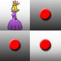

N-Reinas
Descripción|  |
Para el problema de representación de N-Reinas, tenemos un tablero de NxN en el cuál debemos colocar N reinas sin que se amenacen unas con otras. |
Para ello sólo podemos colocarlas de tal forma que no coincidan: ni en fila, ni en columna, ni en diagonal. En cualquier otro caso provocaría que alguna de ellas amenazara a otra.
RepresentaciónA partir de este enunciado hemos tomado como estado, cómo se encuentra el tablero en cada momento
- Estado inicial: Tablero de 10x10 vacío.
- Estado objetivo: Tablero con 10 reinas colocadas de tal forma que ninguna amenace a otra.
A partir del estado inicial se crea el espacio de estados, colocando reinas en el tablero y teniendo en cuenta siempre la precondición de que no se encuentren en la misma fila, columna o diagonal.
EstrategiasEn cuanto a las estrategias utilizadas para este problema de representación, hemos utilizado estrategias no informadas:
- Búsqueda con Profundización Iterativa (IDS)
- Tiempo de ejecución: Aprox. 1102 ms.
- Número de nodos expandidos: 75291
- Solución: En 10 pasos((0,0),(1,2),(2,5),(3,7),(4,9), (5,4),(6,8),(7,1),(8,3),(9,6))
- Búsqueda Primero en Anchura (BFS)
- Tiempo de ejecución: Aprox. 1403 ms.
- Número de nodos expandidos: 34815
- Solución: En 10 pasos((0,0),(1,2),(2,5),(3,7),(4,9), (5,4),(6,8),(7,1),(8,3),(9,6))
- Búsqueda con límite de Profundidad (DLS)
- El límite en profundidad utilizado es 15.
- Tiempo de ejecución: Aprox. 10 ms.
- Número de nodos expandidos: 102
- Solución: En 10 pasos((0,0),(1,2),(2,5),(3,7),(4,9), (5,4),(6,8),(7,1),(8,3),(9,6))
Para este problema podemos observar que parece que la mejor solución es la Búsqueda con límite en profundidad, ya que resuelve el problema en los mismos pasos pero únicamente expande 102 nodos, cuando las otras expanden 75291 y 34815 respectivamente.